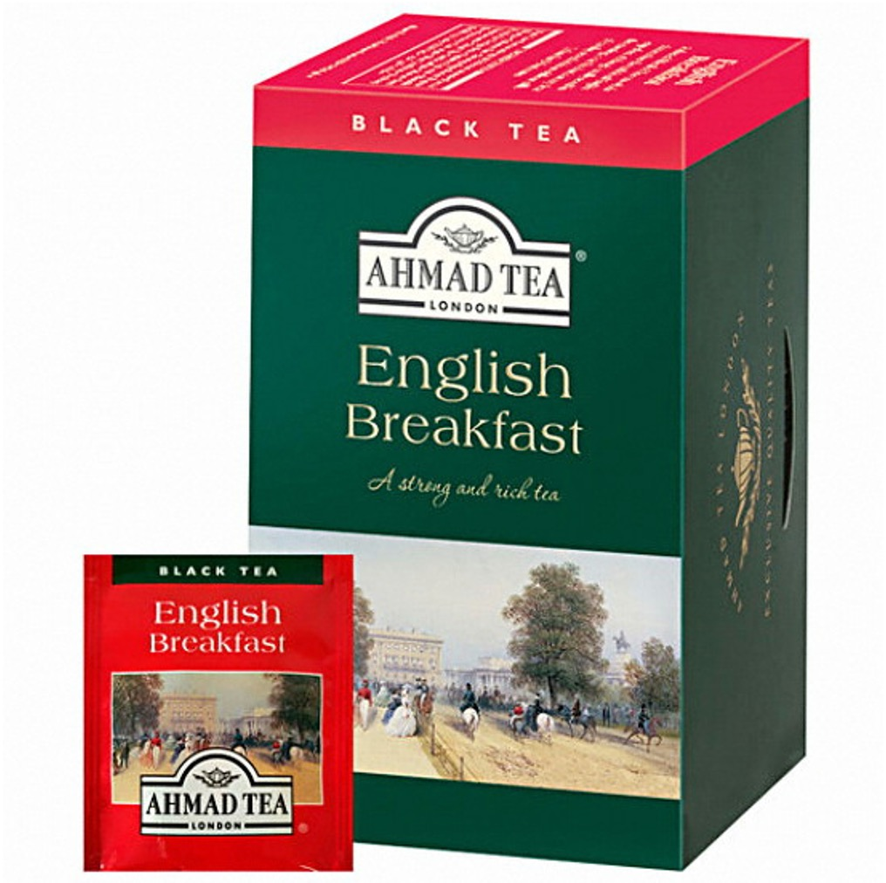

썬텐하는 수박

우주는 어떻게 생겼는가...
우리는 어디서 왔으며 어디로 가는...
꼬꼬무 몽상가인 당신!
분석과 추리를 좋아하며 생각이 많아요.
사람들과 어울리는 것보다는 집에서 조용하게 책을 읽는 게
더 좋은 당신에게는 책에 집중할 수 있는 차를 추천해드릴게요!
추천 차
AHMAD - English Breakfast
(teabags, caffeine)
적당한 감칠맛과 떫은 맛으로 클래식한 홍차의 맛을 즐길 수 있어요.
책과 함께하는 상쾌한 아침이 될 수 있도록 공복에 마셔도 좋은
차를 추천할게요. 우유와 함께 밀크티로 즐겨도 좋아요.